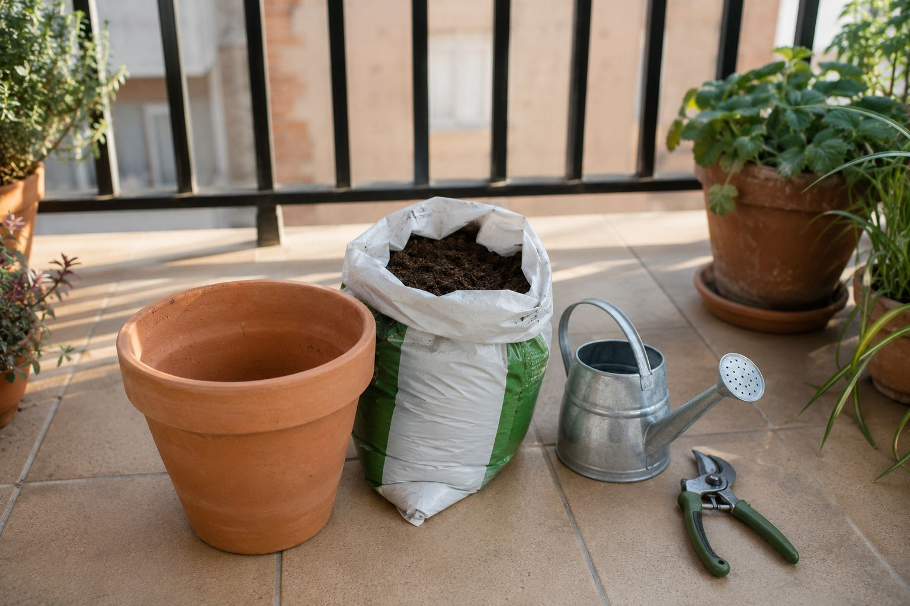

Empezar a plantar en casa da vértigo la primera vez: entras a cualquier tienda de jardinería y hay cientos de productos, sin saber cuáles son imprescindibles y cuáles son accesorios que no necesitas todavía. Esta guía es justo lo contrario: lo mínimo real que necesitas para arrancar bien, sin gastar de más en cosas que puedes añadir más adelante.
1. Una maceta con buen drenaje
Esto es lo primero y lo que más se suele hacer mal: usar una maceta sin agujeros de drenaje, o demasiado pequeña. El agua tiene que poder salir, si no, la raíz se pudre por exceso de humedad. Para la mayoría de hortalizas (tomate, pimiento, lechuga) necesitas al menos 15-20 litros de capacidad; para aromáticas, con 5-10 litros es suficiente.
Nuestras recomendadas para empezar:
Maceta textil con aireación: Las raíces se airean solas, cero riesgo de encharcamiento. Ideal para tomates y pimientos. 🛒 Ver en Amazon →
Maceta rígida con plato: La más recomendada para balcón por su relación calidad-precio. Aguanta bien el exterior. 🛒 Ver en Amazon →
2. Sustrato específico, nunca tierra de jardín
Este es el error más común de quien empieza: usar tierra del jardín o del parque en la maceta. La tierra normal se compacta en un contenedor, no drena bien, y suele traer semillas de malas hierbas o patógenos. Necesitas un sustrato específico para hortalizas o universal con perlita, pensado para maceta.
Sustrato verificado:
Sustrato con perlita para hortalizas: La perlita mejora el drenaje y evita que las raíces se asfixien. 🛒 Ver en Amazon →
3. Algo para regar con precisión
Una regadera de pitorro largo y fino es más importante de lo que parece: te deja regar en la base de la planta sin mojar las hojas (las hojas mojadas favorecen los hongos). Con 5-8 litros de capacidad es suficiente para un balcón con varias macetas.
Para regar bien desde el primer día:
Regadera de precisión: Pitorro largo y fino, riega en la base sin mojar las hojas. 🛒 Ver en Amazon →
Si vas a tener varias macetas o sueles olvidarte de regar, un kit de riego por goteo se amortiza rápido y evita disgustos en vacaciones. Tienes esto explicado con detalle en nuestro artículo de riego por goteo en balcón.
4. Una herramienta básica para trasplantar
No hace falta un kit completo de 10 piezas el primer día. Con una paleta de trasplante y unas tijeras de podar tipo bypass tienes lo esencial: la paleta para sembrar y mezclar sustrato, las tijeras para cosechar y quitar hojas secas sin aplastar el tallo.
Lo justo para empezar:
Paleta para trasplantar: Mango ergonómico antideslizante, acero inoxidable. 🛒 Ver en Amazon →
Tijeras de podar tipo bypass: Corte limpio sin aplastar el tallo de la planta. 🛒 Ver en Amazon →
5. Semillas o plantón: qué elegir si es tu primera vez
Aquí va un consejo que te ahorra frustración: si es tu primera vez, compra un plantón pequeño ya germinado en vez de partir de semilla. Sembrar desde semilla es más barato pero exige más paciencia y hay más margen de error (temperatura, humedad, luz). Un plantón de vivero te da una ventaja de 3-4 semanas y mucha menos incertidumbre. Cuando ya tengas más experiencia, sembrar desde semilla sale más a cuenta y da más satisfacción.
6. Cuánto vas a gastar en total
Sumando lo esencial (una maceta, sustrato, regadera, y la herramienta básica) para empezar con una o dos plantas, el desembolso real ronda entre 25€ y 45€, dependiendo de la calidad que elijas. No hace falta gastar más que eso para arrancar — el resto de accesorios (mallas de sombra, medidores, riego automático) los añades más adelante si el huerto te engancha, que suele pasar.
🌱 Consejo real: mejor empezar con 2 plantas fáciles y que te salgan bien, que con 8 plantas distintas y perder el interés porque se te complica. Lechuga, rábano y albahaca son las tres más agradecidas para empezar.
El siguiente paso: qué plantar y cuándo
Con los materiales listos, lo que decide si tienes éxito o no es el momento y la planta correcta para tu zona. Estas herramientas gratuitas te lo dicen exacto, sin adivinar:
← Volver a Consejos | Ver también: Catálogo completo de materiales · 10 plantas fáciles para empezar